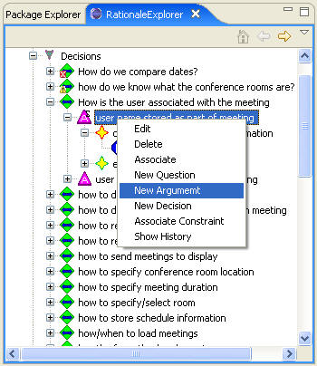
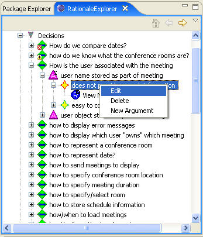
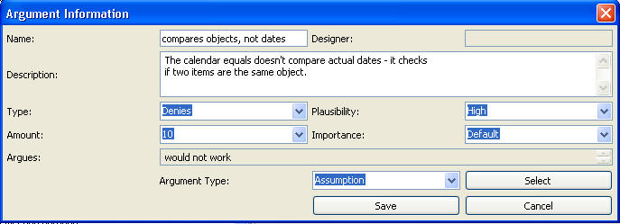

In order to create a new argument, right-click any name of elements under a decision problem or a requirement in the RationaleExplorer and choose New Argument, which will bring up the argument editor. Or we could edit an existing argument by right-click the name of an existing argument and choose edit or by double-clicking the name of the argument. See the following figures:


The following figure shows the Argument Editor. Arguments can be associated with claims
(which then point into the Argument Ontology), assumptions, requirements, or
other arguments. In this example, it argues a Claim, which is shown by the
Argument Type field. When an argument is initially created, it is mandatory that
it be associated with something. This is done using the “Select” button. When
this happens, the user is allowed to either select an
already existing item to use or create a new one. Each argument gives the type,
indicating if it is for or against the alternative. The possible values vary
depending on the type of the argument. These are as follows:
• Claim – supports or denies
• Requirement – satisfies, addresses, or violates
• Assumption – supports or denies
• Argument – presupposes or opposes
In addition, the user can give the Importance of the argument, the Amount (how
much the alternative meets the claim), and the Plausibility (how sure they are
of the argument). The Importance can be specified as “Default,” in which case it
will be inherited from the claim or Argument Ontology. Arguments involving
requirements or dependencies will default to an importance of “Essential.”
